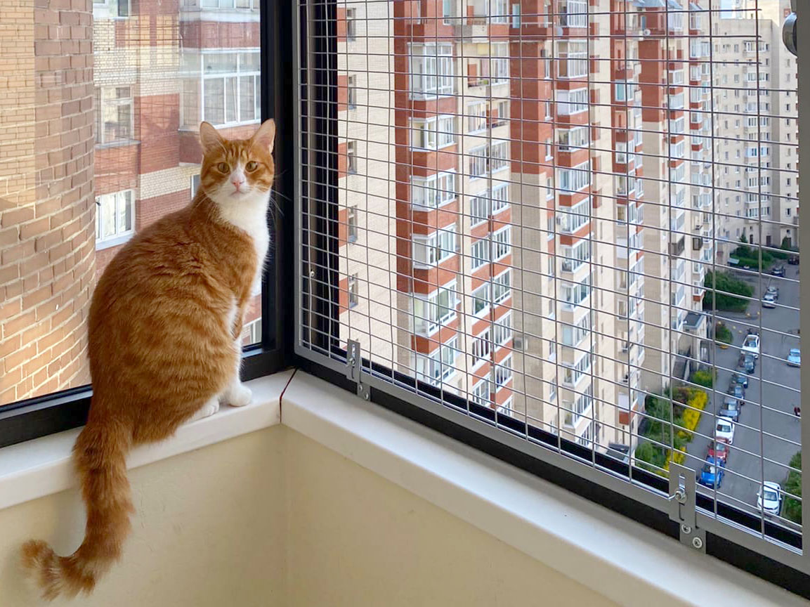
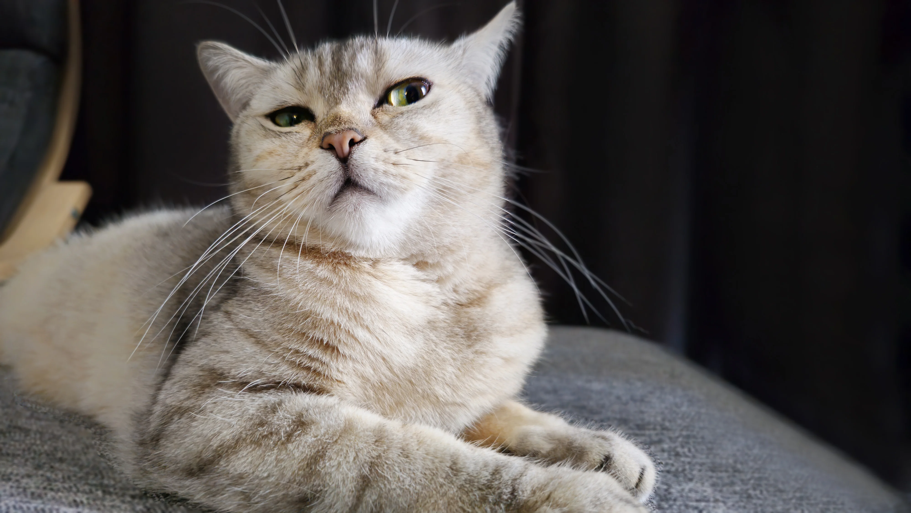
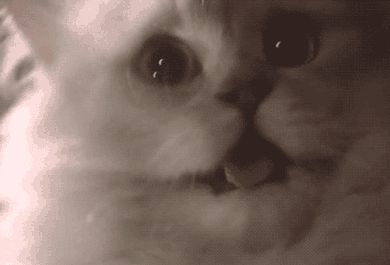

Что нужно, если хотите завести котика
Безопасность

Пространство, где живет кошка, должно быть безопасным. Установите на окна москитные сетки или сетки-«антикошки», они предотвратят угрозу выпадения питомца из окна, ведь большинство усатых любят созерцать уличные пейзажи и птичек, греться на подоконнике.
Удостоверьтесь, что в свободном доступе нет открытых проводов, которые с лёгкостью может перегрызть котёнок, в момент, когда за ним не наблюдают. Также стоит убедиться, что в помещении нет ядовитых растений.
Большинство комнатных растений, украшающих интерьер, являются чрезвычайно опасными для кошек. Чтобы не рисковать, лучше убрать всю домашнюю растительность в зону недосягаемости питомца. По своей природе кошки испытывают потребность в употреблении растительных элементов, лучше всего для удовлетворения этих нужд приобрести специальную траву для кошек, например, пророщеный овёс

Здоровье
Здоровье четвероного — неотъемлемый элемент счастливой жизни питомца. Здоровый образ жизни домашнего любимца невозможен без ежегодной комплексной вакцинации, обработки от экто- и эндопаразитов.
Ветеринарные врачи рекомендуют проходить профилактический осмотр животного раз в полгода. Что до водных процедур, то купать кошку специалисты советуют не чаще двух-трех раз в год.
Правильное питание
Сбалансированное питание — основа здоровья и хорошего настроения кошки. Оно должно зависеть от уровня активности, наличия или отсутствия у животного хронических заболеваний, возраста и даже времени года. Сегодня все потребностям домашних любимцев отвечают готовые корма. Существует множество линеек премиум и супер-премиум кормов для кошек всех пород и особенностей.
С осторожностью стоит отнестись к угощениям кошек с человеческого стола. Например, в разрез с устоявшимся мнением, домашним кошкам противопоказано молоко. Кисломолочные продукты индивидуально допустимы, но без предварительной ветеринарной консультации не стоит рисковать. Если хотите побаловать любимца, угостите лакомством из зоомагазина. И не забудьте предоставить питомцу круглосуточный доступ к свежей воде
.webp)
Свобода перемещения
Кошка, которая гуляет сама по себе, — счастливая кошка. Обеспечьте питомцу свободу перемещаться во всех интересующих направлениях. Кошки очень любят забираться наверх, лазать и перепрыгивать с конструкции на конструкцию.
Замечательно, если у кошки есть возможность поскакать со стула на тумбочку, а с тумбочки на шкаф, — возможность вертикального передвижения. Если кошки не имеют доступа к верхним секциям в квартире, то будут чувствовать себя угнетённо и не смогут полностью расходовать свою физическую потребность в активных движениях.
Также очень важно, чтобы у кошки были свои укромные уголки — домики, коробочки, закрытые лежанки, чтобы питомец мог уединиться там и отдохнуть.
А чтобы питомец не точил коготки о мебель, рекомендуется обеспечить его удобной когтеточкой.
Пользуясь когтеточкой, кошка должна иметь возможность вытянуться в полный рост. Лучше всего для таких нужд подходит когтеточка-столбик или когтеточка, прибиваемая на стену. Главное, чтобы приспособление было достаточно высоким. Короткие и низкие когтеточки могут подойти для котенка, взрослым кошкам будет неинтересно, и в противном случае может пострадать ваш диван.
.jpg)
Игры и общение
Домашние кошки всё-таки хищники. И от природы им полагается охотиться. Эту потребность запросто можно реализовать в играх.
Кошки любят догонять и ловить “добычу”. Отлично подойдут игрушки — мячики, мышки или удочки. Обязательно в процессе игры позволяйте питомцу “одерживать победу” и поощряйте охотника лакомым кусочком.
А еще, хоть кошки и кажутся нам независимыми и самодостаточными, на самом деле они очень нуждаются в общении с хозяином и скучают. Обязательно отвечайте на просьбы питомца уделить ему внимание, чаще гладьте любимца и называйте вслух его кличку.
Что купить котику на первое время

- Корм для котиков
- Миски
- Лоток и наполнитель
- Когтеточка
- Игрушка
- Переноска
- Гигиенические средства
- Лежанка, чтобы у котика было место для отдыха